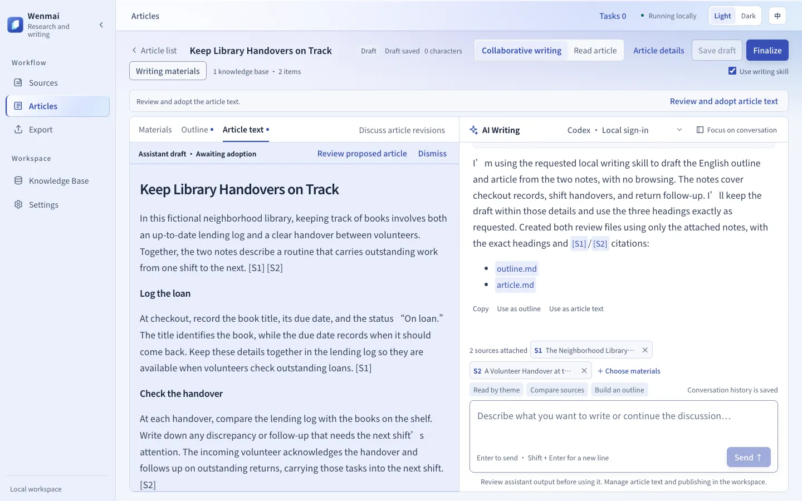
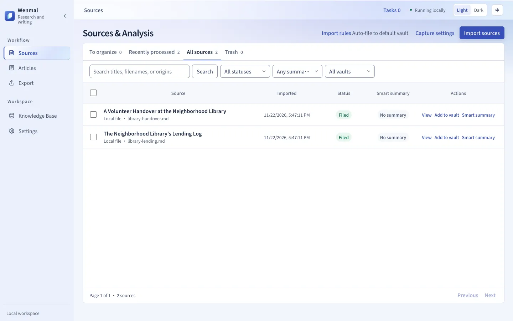
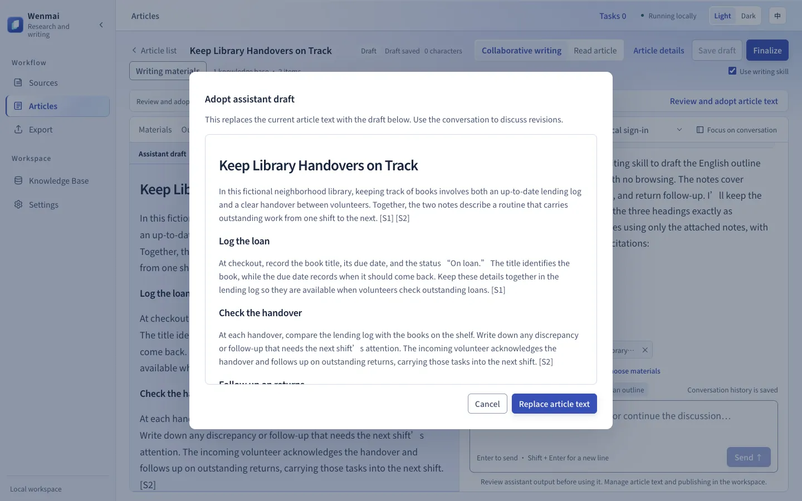
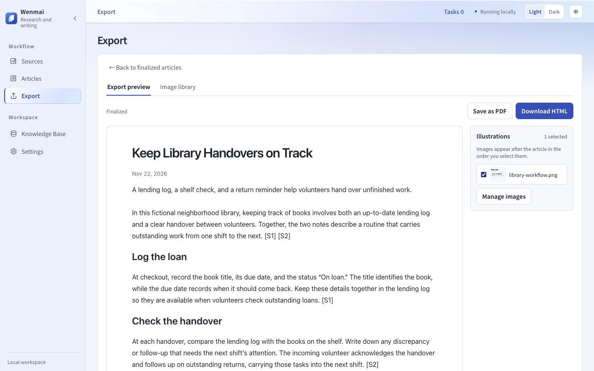

A local workspace for research and writing
From your sources to your own words.
File your sources in a knowledge base, then work with one or more of them in Codex or Claude. Review the draft and export the finished article with illustrations as PDF or offline HTML.

From sources to finished work
Start with a single source, or compare several to build an analysis of your own.

Keep your original sources together
Import Markdown, HTML, plain text, or ZIP files. Open the knowledge base to check the saved source text and its details.
- Use the built-in knowledge base or connect an existing Obsidian folder.
- File imports automatically and enable automatic maintenance for individual knowledge bases.
- Generate a smart summary with references to the source text.

Draft from the sources you select
Bring one or more sources into the conversation. Discuss the outline and article with a local Codex or Claude CLI.
- Open the proposed outline or article and check which sources it draws on.
- Review and adopt the proposal to update the working draft.

Share an article with illustrations
Finalize your article and open the export preview. Pick an illustration from the image library if you want to include one.
- Download a standalone HTML file you can open offline.
- Use the browser’s print dialog to save a PDF.
Follow a real walkthrough
Both walkthroughs start with two notes from a fictional neighborhood library and go through filing, review, and export with an illustration. Download the notes to follow along, then compare your version with the sample export.
The clean-workspace walkthrough uses the vault-maintainer revision documented in the README. If an import keeps waiting to be filed, the README lists the compatible revision and setup.
Keep Library Handovers on Track
Neighborhood library example
Start writing on your device
Use Node.js 22.12 or later. Follow the setup guide to install the filing and writing skills, then sign in to Codex or Claude CLI before using AI Writing.